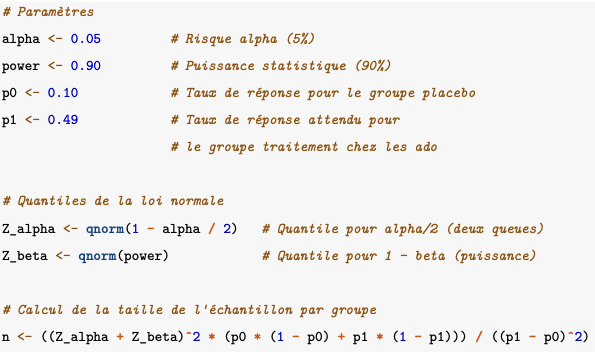

Etude statistique dans un essai clinique
Introduction
Ce projet consiste en la réalisation d’une étude statistique dans le cadre d’un essai clinique. Nous travaillons sur un jeu de données simulées pour effectuer l’analyse statistique d’une étude de phase 3. L’objectif est de fournir au laboratoire une Autorisation de Mise sur le Marché (AMM) avec une indication dans la prise en charge de la drépanocytose.
La drépanocytose est une maladie génétique qui affecte les globules rouges et peut entraîner des complications graves. Elle se manifeste notamment par une anémie, des crises douloureuses et un risque accru d’infections.

Lors d’une étude de phase 3, les chercheurs comparent un nouveau traitement prometteur au traitement standard, qui est le traitement reconnu et généralement administré pour une affection ou une maladie. Dans notre étude statistique, le nouveau traitement s’appelle le Voxelotor et nous comparons ces effets à un placebo (traitement qui n’a aucune action spécifique sur le trouble qu’il vise à soulager). Pour cela, nous réalisons des tests statistiques sur des hypothèses définit en amont.
Le dépôt GitHub contenant le rapport complet du projet, ainsi que le code R, est disponible ici.
Étude et analyses
Nous disposons de deux jeux de données : subjid, qui regroupe l’ensemble des patients de l’étude ainsi que leurs informations démographiques, et follow, qui contient l’ensemble des mesures mesurées sur ces patients à différents moments de l’étude. Notre population contient 182 patients, répartis en 92 recevant un placebo et 90 traités avec le voxelotor (VOX_1500).
Dans un premier temps, nous cherchons à mieux caractériser la population de l’étude, notamment en comparant les différentes caractéristiques des patients selon leur sexe. Cette analyse révèle une légère prédominance féminine dans l’échantillon. Par ailleurs, la distribution de l’âge est très similaire entre les deux sexes, avec une moyenne de 25 ans dans les deux groupes. Cette étude descriptive nous permet également d’identifier un patient masculin âgé de 45 ans, qui se démarque nettement du reste de l’échantillon.

Plan d’analyse statistique
Le plan d’analyse statistique (SAP, disponible ici) décrit de manière détaillée la stratégie d’analyse des données de l’étude. Il garantit la rigueur, la transparence et la reproductibilité des analyses statistiques. Ce plan est généralement rédigé avant la fin de l’essai, afin d’éviter tout biais pouvant découler des résultats observés.
Pour évaluer l’effet du voxelotor sur l’amélioration de l’hémoglobine des patients par rapport au placebo, les analyses définies dans le SAP sont toutes réalisées. L’analyse principale porte sur la réponse en hémoglobine à la semaine 72, qui correspond au maximum du suivi des patients. L’analyse secondaire quant à elle examine le changement de l’hémoglobine entre le début de l’étude et la semaine 72 sur plusieurs marqueurs cliniques.
Analyse principal
La réponse en hémoglobine est définie comme une augmentation de plus de 1g/dL par rapport à la valeur de référence mesurée avant le début du traitement. Cela signifie qu’un patient est considéré comme ayant répondu favorablement au traitement si son taux d’hémoglobine a augmenté d’au moins 1g/dL par rapport à la valeur initiale, mesurée avant l’administration du voxelotor. Si aucune mesure d’hémoglobine n’est disponible à la semaine 72, le patient est imputé comme non-répondeur. Par exemple, si le patient ne se présente pas à la consultation, si les données sont perdues ou invalides, ce patient sera considéré comme n’ayant pas montré de réponse au traitement.
Nous utilisons un test statistique du Chi-2 avec correction de Yates pour comparer les taux de réponse en hémoglobine entre le groupe traité par VOX_1500 et le groupe par le placebo, afin de déterminer s’il existe une différence significative.

Les résultats du test indiquent qu’il n’y a pas de preuve statistiquement significative d’une différence entre les taux de réponse en hémoglobine des deux groupes.
Cependant, certains facteurs pourraient être amenés à faire varier l’efficacité du VOX_1500. C’est pourquoi, nous réalisons le même test statistique avec les mêmes hypothèses sur des sous-populations définis à partir des facteurs suivants : l’âge des patients, l’utilisation préalable d’hydroxyurée (HU) et l’historique des crises vaso-occlusives (VOC).
Les résultats de cette étude, montrent que le VOX_1500 semble plus efficace chez certains groupes de patients. Premièrement, on observe une différence significative en faveur du traitement chez les non-utilisateurs d’HU. Cela indique une meilleure réponse en hémoglobine par rapport au placebo. En revanche, chez les utilisateurs d’HU, aucune différence notable n’a été trouvée entre les deux traitements.
Concernant les crises vaso-occlusives, les patients ayant eu une seule crise répondent mieux au VOX_15000, alors que ceux ayant eu plusieurs crises ne montrent aucun signe positif supplémentaire par rapport au placebo.
Enfin, l’analyse par tranche d’âge révèle des résultats similaires entre les groupes VOX_1500 et placebo, tant chez les adolescents que chez les adultes.
En somme, ces observations suggèrent que l’efficacité du VOX_1500 pourrait dépendre de certains facteurs cliniques, mais des études supplémentaires seront nécessaires pour valider ces conclusions.
Analyse secondaire
Dans cette secone partie, nous essayons de déterminer s’il existe une différence dans le changement moyen des taux d’hémoglobine entre les deux groupes (VOX_1500 et placebo). Pour répondre à cette question, nous réalisons une analyse statistique à l’aide de l’ANOVA. Cette dernière est une méthode statistique permettant de comparer les moyennes de plusieurs groupes afin de déterminer si au moins un groupe diffère significativement des autres. Plus concrètement, elle permet d’évaluer si les variations observées dans les données sont dues à des différences entre les groupes ou à des variations aléatoires au sein des groupes eux-mêmes. Elle nous est très utile ici, car elle permet d’ajuster les résultats en tenant compte des valeurs d’hémoglobine de départ (baseline) et de l’utilisation préalable d’hydroxyurée (HU) comme facteur supplémentaire.
Les résultats révèlent que le VOX_1500 entraîne une augmentation significative du taux d’hémoglobine par rapport au placebo.

Les patients traités par VOX_1500 présentent une augmentation moyenne de 0,51 g/dL d’hémoglobine, contre 0,23 g/dL pour le groupe placebo. Cette différence est statistiquement significative au risque 5 %. Nous observons, un très faible impact des taux d’hémoglobine au départ sur l’évolution des niveaux observés. Cependant, l’utilisation préalable d’hydroxyurée influence fortement les résultats, les patients sous ce traitement montrant des évolutions différentes de ceux n’en prenant pas. Le traitement peut donc offrir un bénéfice notable en termes d’augmentation de l’hémoglobine, en particulier chez les patients n’utilisant pas d’hydroxyurée.
Marqueurs d’hémolyse
Nous analysons ensuite l’évolution des marqueurs d’hémolyse en utilisant la même méthode. Ces indicateurs biologiques permettent d’évaluer la destruction des globules rouges dans le sang. Deux marqueurs clésretiennent notre attention :
Bilirubine non conjuguée : elle augmente lorsque les globules rouges sont détruits, reflétant une hémolyse active.
Pourcentage de réticulocytes : ces globules rouges immatures sont produits en réponse à la destruction des globules matures. Un taux élevé traduit une compensation de l’organisme face à l’hémolyse.
L’analyse de ces paramètres permet de mieux comprendre l’impact du traitement sur la santé des globules rouges.

L’analyse des marqueurs d’hémolyse révèle que le traitement VOX_1500 a un effet significatif sur la réduction de la bilirubine non conjuguée et des réticulocytes, deux indicateurs clés de la destruction des globules rouges.

Le traitement VOX_1500 entraîne une diminution moyenne de -8,09 g/dL contre -4,56 g/dL pour le placebo. Cette différence statistiquement significative confirme l’effet notable du traitement. De plus, le VOX_1500 montre également un impact significatif, sans que les valeurs initiales ou l’utilisation d’Hydroxyurée n’influencent les résultats.
On en conclut que le traitement VOX_1500 a un effet plus marqué que le placebo sur la réduction de la bilirubine non conjuguée et des réticulocytes, comme le montre la différence significative dans les changements moyens ajustés pour ces deux marqueurs d’hémolyse. Le traitement pourrait ainsi être plus efficace pour réduire les caractéristiques d’hémolyse par rapport au placebo.
Nouvel essai clinique
Au vu des facteurs influents vus dans l’analyse principal. Il se peut que le laboratoire envisage de lancer un nouvel essai clinique afin d’évaluer l’efficacité du VOX_1500 chez les adolescents (patient de 12 à 18 ans). En utilisant le même critère principal que précédemment et en se basant sur les résultats obtenus pour le voxelotor dans cette population, tout en supposant un taux de réponse de 10% pour le groupe placebo, nous procédons au calcul du nombre de patients nécessaires pour démontrer l’efficacité du traitement. Ce calcul est effectué en visant une puissance statistique de 90% et un risque alpha de 5%, avec un ratio de traitement 1:1.

La taille de l’échantillon nécessaire pour ce nouvel essai clinique est de 48 patients au total, répartis également entre les deux groupes, soit 24 patients par groupe (placebo et le VOX_1500). Cette estimation garantit une puissance de 90% pour détecter une différence significative entre les groupes 29 avec un risque alpha de 5%.
Conclusion
L’analyse principale n’a pas mis en évidence de différence statistiquement significative entre les traitements étudiés. Pour les analyses secondaires, plusieurs résultats intéressants ont émergé. Ces résultats confirment que le voxelotor a un impact supérieur au placebo sur plusieurs caractéristiques clé, telles que l’augmentation de l’hémoglobine et la réduction de la bilirubine non conjuguée et des réticulocytes. Cela renforce donc son potentiel thérapeutique prometteur pour la gestion de la drépanocytose, en particulier dans des sous-groupes spécifiques de patients.
Ce projet a permis de s’immerger dans le monde des essais cliniques à travers un cas réel, en analysant l’efficacité du voxelotor dans le traitement de la drépanocytose. Avec une approche à la fois statistique et pragmatique, il a été particulièrement enrichissant d’explorer les différentes facettes de l’évaluation d’un traitement.
Note : 19/20